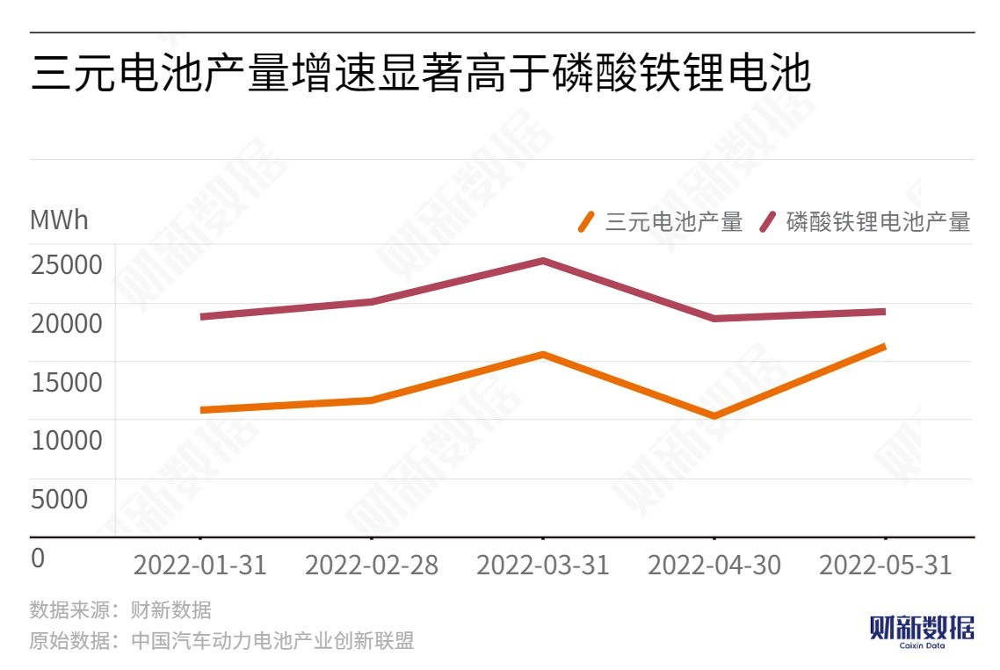

In May, the proportion of ternary battery installations increased significantly, due to the pressure on the main raw material costs and the need to replenish inventory. Compared with LFP batteries, which have a higher installation volume, the cost-effectiveness of ternary batteries is recovering.

According to the China Automotive Power Battery Industry Innovation Alliance, the domestic installation volume of ternary batteries in May was 8.3 GWh, with a year-on-year increase of 59.0% and 90.3%, respectively. In comparison, the installation volume of LFP batteries was 10.2 GWh, with a year-on-year increase of only 15.1%. The proportion of ternary batteries in the total installation volume increased by 11.85 percentage points to reach 44.73%, and the increase was significant.
In terms of production, the domestic production of ternary and LFP batteries in May was 16.3 and 19.2 GWh, respectively, with a year-on-year increase of 58.2% and 3.3%, respectively.
Since 2020, BYD's blade battery installations have all used LFP cells. As BYD's new energy vehicles rapidly increased in volume, the usage rate of blade cells also increased synchronously. At the same time, with the significant increase in the prices of the main raw materials of ternary batteries, such as cobalt and nickel, since 2021, many automakers have chosen LFP batteries instead of ternary batteries due to their lower cost based on cost-effectiveness considerations.
However, recently, the proportion of ternary battery installations has increased, which is closely related to the trend of the price difference between the two mainstream batteries shrinking. The team at CMB International Securities believes that the fluctuation in raw material prices is the main reason for the shrinking price difference.